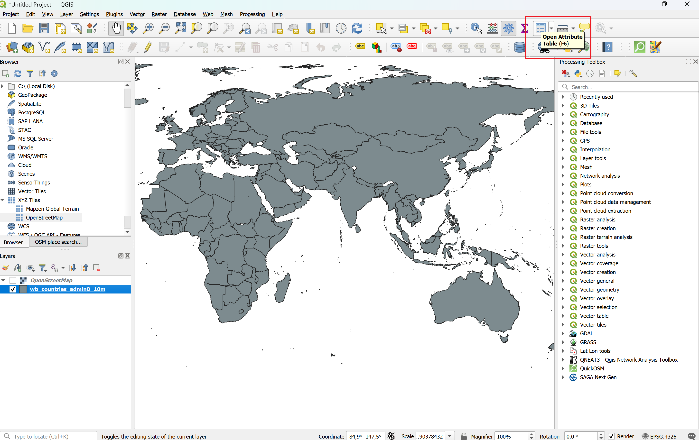
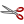
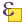
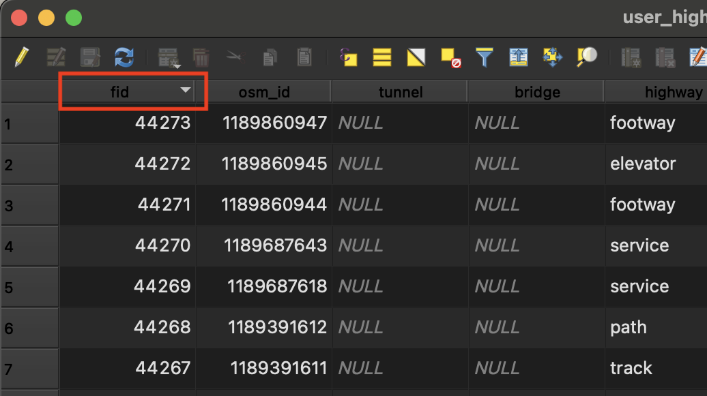
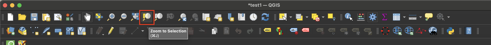
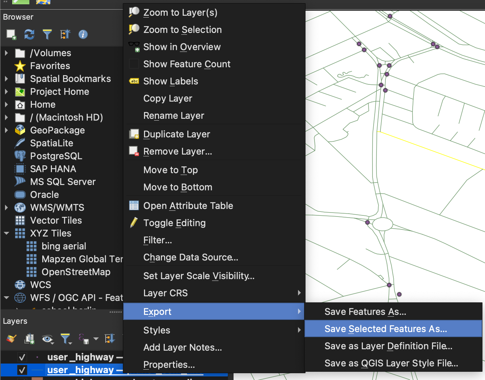

Attribute Table#
Each vector layer consists of geometric features (points, lines or polygons) and an attribute table (Fig. 2.2). The attribute table contains information on each feature in the layer. The information is stored in rows and columns in the attribute table. Each row in the table represents a feature, while columns store attributes of that feature. You can use the attribute table to search, sort, filter, edit and select data.

Vector Data overview (Source: HeiGIT).#
Now it’s your turn!
You can complement this chapter by doing the steps with a vector layer of your choice. When working with geodata, you will always have to understand the information stored in the datasets, both the geometries as well as the attribute data.
Opening the attribute table#
Having a look into the attribute table is essential to understand and get an overview of the data you are working with. After downloading and importing a dataset into QGIS, you will most likely open the attribute table to understand the data and see what information is available. Understanding what kind of information is available is indispensable when working with GIS software.
You can open the attribute table in two ways:
Right click on a layer in the Layers panel and select
Open Attribute Table(Fig. 2.25).

Opening the attribute table via right-click in QGIS 3.36#
Select a layer in the Layers panel and click on the attribute table symbol in the toolbar (Fig. 2.26).
Note
If you have multiple layers, only the attribute table of the layer currently selected in the layer panel will open.

Opening the attribute table in QGIS 3.36#
Buttons of the attribute table
Icon |
Description |
Purpose |
Shortcut |
|---|---|---|---|
|
Toggle editing mode |
Enable editing functionalities |
Ctrl + E |
|
Toggle multi-edit mode |
Update multiple fields of many features |
|
|
Save edits |
Save current modifications |
|
|
Reload the table |
||
Add feature |
Add new geometry-less feature |
||
|
Delete selected features |
Remove selected features from the layer |
|
 |
Cut selected features to clipboard |
Ctrl + X |
|
Copy selected features to clipboard |
Ctrl + C |
||
Paste features from clipboard |
Insert new features from copied ones |
Ctrl + V |
|
 |
Select features using an Expression |
||
|
Select All |
Select all features in the layer |
Ctrl + A |
|
Invert selection |
Invert the current selection in the layer |
Ctrl + R |
Deselect all |
Deselect all features in the current layer |
Ctrl + Shift + A |
|
Filter/Select features using form |
Ctrl + F |
||
|
Move selected to top |
Move selected rows to the top of the table |
|
|
Pan map to the selected rows |
Ctrl + P |
|
|
Zoom map to the selected rows |
Ctrl + J |
|
|
New field |
Add a new field to the data source |
Ctrl + W |
|
Delete field |
Remove a field from the data source |
|
Organize columns |
Show/hide fields from the attribute table |
||
|
Open field calculator |
Update field for many features in a row |
Ctrl + I |
|
Conditional formatting |
Enable table formatting |
|
|
Dock attribute table |
Allows to dock or undock the attribute table |
|
|
Actions |
Lists the actions related to the layer |


{kind=link}
Sort the attribute table#
You can sort data in the attribute table by clicking on a column header. Text data will be sorted alphabetically and numeric data will be sorted by value. To reverse the sort order, click the header again. A small arrow in the column header indicates whether it is sorted in ascending or descending order.

Attribute table sorted ascendingly.#
{kind=link}

Attribute table sorted descendingly.#
Zoom in on a specific feature via attribute table#
You can zoom in on a specific feature if you need to locate it geographically or you want to get a closer look:
Zoom: Right click on a feature –>
Zoom To FeatureClose your attribute table. The map canvas will now show the selected feature.
Video: Zoom in on a feature
Manually select features in the attribute table#
To interact with features in a layer you have to select these features. One way to select features is via the attribute table.
Select: Click on the lines of the features.
Multi Select: To select multiple features press
Ctrland selectfeatures.Show only selected features: In the bottom left of the attribute table open the dropdown menu and select
Show selected features. To show again all features click onShow all features.Only show unselected features: Select features and click on

Video: Manually select features in the attribute table
Zoom to selected area#
Now that you know how to select features, you can zoom onto your area of
interest. To do so you can click on the symbol on the toolbar or right click
on the layer and select Zoom to Selection (Fig. 2.29).
{kind=link}

Screenshot of how to zoom to Selection on the top.#

Screenshot of how to zoom to Selection by clicking right.#
Save only selected features as a new file#
After you have selected your data, you might want to proceed with only the
selection. You can save your selection as a new layer. To do so right click on the
layer - Export -> Save only selected features
{kind=link}

Screenshot of how to save only selected features.#
Now, you can choose the format, layer name and CRS.
Tip
We recommend using GeoPackage (.gpkg) instead of shapefile (.shp) in most cases. If you are unsure which format is most appropriate, check out the geodata types page on the wiki.
Self-Assessment Questions#
Test your knowledge
Check whether you know the key concepts from this chapter by answering the questions below.
What is the attribute table in a vector layer, and how is it structured?
Answer
The attribute table is a tabular representation of the non‑spatial (or descriptive) data for a vector layer. Each row corresponds to one feature (point, line, polygon) in the layer. Each column (also called a field or attribute) stores one attribute/property (e.g. name, population, type) for every feature.
How can you open the attribute table in QGIS?
Answer
In QGIS, right‑click on the layer in the Layers Panel and choose Open Attribute Table.
Alternatively, you can use the Attribute Table button in the toolbar.
How do you zoom to a specific feature using the attribute table?
Answer
Within the attribute table, you can right‑click on a feature’s row (or in a cell) and choose “Zoom to Feature”. That changes the map view to focus on that feature.
Describe how to manually select features via the attribute table, and how to show only selected or unselected features.
Answer
Manually selecting features:
Clicking on a row header of an individual feature in the attribute table selects the feature. It will be highlighted in blue.
To select multiple features, hold Ctrl or Cmd on MacOS and click on additional row headers to add more features to the selection.
Holding Shift let’s you select a range of features. Showing only selected or unselected features:
At the bottom left of the attribute table dialog, there is a drop‑down menu (filter) that lets you switch between:
Show All Features
Show Selected Features
Show Unselected Features
Other filters: Show features visible in map, Show edited and new features, etc.
You can also use the

Move selected features to the top-button in the attribute table toolbar
Once you have selected a subset of features, how do you save just those features into a new layer (or file)?
Answer
Right-click on the layer where you selected the features.
Select
Export→Save Selected Features as.... A new window will open.Choose the data format, specify the save location and file name by clicking on the

Click
Ok.